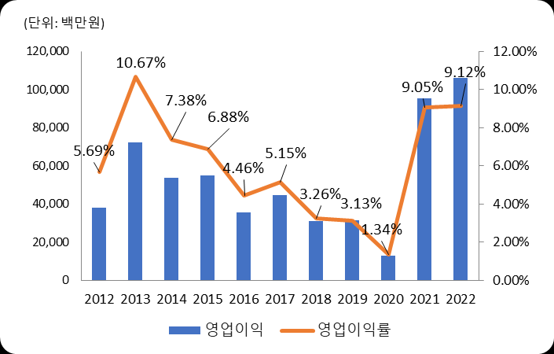
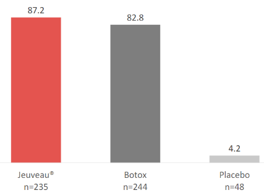
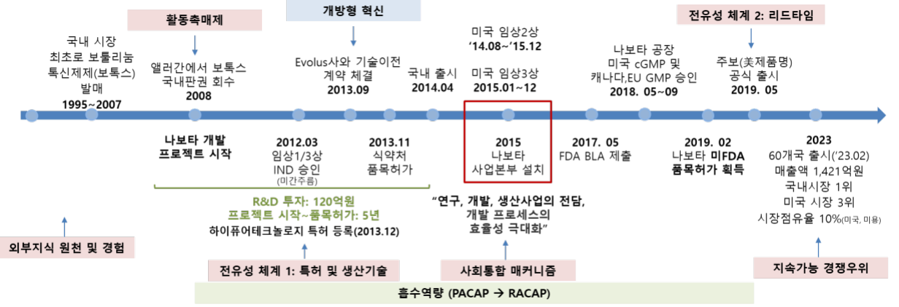
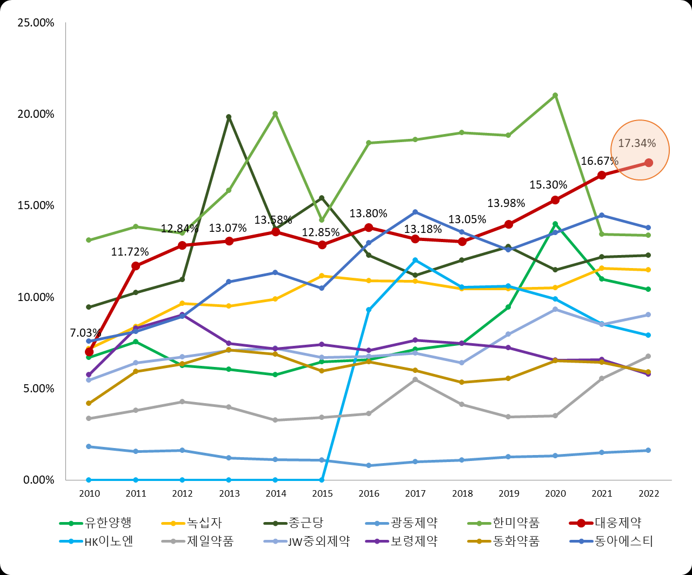
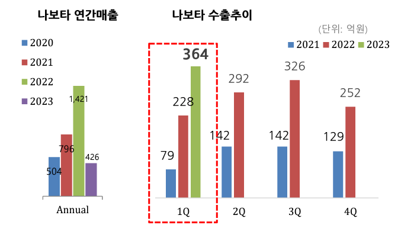

국내 제약·바이오 시장은 꾸준히 성장하고 R&D 파이프라인도 늘고 있지만, 국내 제약사가 개발한 신약이 글로벌 시장에서 성공한 사례는 여전히 찾아보기 힘들다. 대웅제약의 보툴리눔 톡신 제제 '나보타'는 2019년 미국 공식 출시 후 3년 만에 미국 시장 3위 제품으로 빠르게 성장했다. 본 사례연구는 국내 전통 제약사가 개발한 의약품이 선진국 시장에서 성공적으로 사업화할 수 있었던 혁신 요소를 흡수역량과 개방형 혁신 관점에서 분석한다.
- 국내외 제약·바이오 시장과 R&D 파이프라인은 꾸준히 성장하고 있지만, 국내 제약사가 개발한 신약이 글로벌 시장에서 성공한 사례는 여전히 찾아보기 힘들다.
- 대웅제약의 나보타는 2019년 미국 공식 출시 후 3년 만에 미국 시장 3위 제품으로 빠르게 성장했다.
- 본 연구는 국내 제약사가 개발한 의약품이 글로벌 시장에서 성공적으로 사업화할 수 있었던 혁신 요소를 흡수역량과 개방형 혁신 관점에서 분석한다.
- 이를 통해 국내 제약·바이오 산업에 대한 시사점을 도출하고자 한다.
1. 서론 — 파이프라인은 느는데, 글로벌 성공은 왜 드문가
글로벌 의약품 시장은 2020년 1조 1,619억 달러 규모에서 연평균 4~7%씩 성장하고 있고, 국내 신약 파이프라인도 2018년 573개에서 2021년 1,477개로 2.5배 이상 늘었다. 그러나 파이프라인의 수가 신약 개발·사업화 성공률로 직결되지는 않는다. 2022년 기준 1,000억 원이 넘는 수출 실적으로 글로벌 상업화에 성공한 국산 의약품(단일 제품 기준)은 셀트리온의 바이오시밀러 3종(램시마·허쥬마·트룩시마)과 대웅제약의 나보타뿐이며, 국내 전통 제약사 중에서는 나보타가 유일하다.
선진국 시장에서 국내 의약품의 성공이 어려운 이유는 글로벌 기업 대비 낮은 R&D 투자와 낮은 연구효율성이다. 글로벌 10대 제약바이오 기업의 평균 R&D/매출액(2021년)은 19.8%로, 국내 10대 전통 제약사 평균 9.65%(2022년)보다 월등히 높다. 국내 시장 위주의 제네릭·상품 매출 구조에서 전통 제약사의 영업이익률은 6.3%에 그쳐 R&D 투자 여력이 높지 않다. 본 연구는 이런 제약 속에서 나보타가 성공한 요인을 분석해 국내 제약 산업에 시사점을 제안한다.
2. 이론적 배경
2.1 흡수역량(Absorptive Capacity)
Cohen & Levinthal(1990)은 흡수역량을 새로운 외부 정보의 가치를 인식하고, 동화시키고, 상업적 목적에 적용하는 기업의 능력으로 정의했으며 그 기반은 조직의 사전 관련 지식이라고 보았다. Zahra & George(2002)는 이를 동태적 역량 관점에서 재구성해 흡수역량을 잠재적 흡수역량(PACAP: 습득·동화)과 실현적 흡수역량(RACAP: 변환·활용)으로 구분했다. 잠재적 흡수역량은 외부 지식의 원천·상호보완성·과거 경험에 영향을 받고, 이를 실현적 흡수역량으로 전환하려면 사회통합 매커니즘이 필요하며, 잠재적 흡수역량을 발현시키는 활동촉매제와 결과물을 보호하는 전유성 체계가 지속가능한 경쟁우위를 좌우한다. 본 연구는 이 모델을 나보타 분석의 틀로 삼는다.
2.2 개방형 혁신(Open Innovation)
Chesbrough(2006)의 개방형 혁신은 기업 내외부의 지식 흐름을 활용해 내부 혁신을 가속화하고 혁신의 외부 활용 시장을 확대하는 전략이다. 외부에서 내부로 기술을 들여오는 내향형 개방과, 내부 기술을 외부로 보내 다른 비즈니스 모델로 상업화하는 외향형 개방(기술판매·분사화)으로 나뉜다. 신약개발 R&D 비용이 급증하고 연구효율성이 낮아지는 제약·바이오 산업에서 특히 활발하다.
3. 시장 분석: 보툴리눔 톡신 제제 시장
글로벌 미용의료 시장은 미용시술의 성장이 주도하고 있으며, 그중 가장 크고 성장률도 높은 것이 보툴리눔 톡신 시술이다. 보툴리눔 톡신 제제는 전체 미용시술의 43.2%를 차지하며 2015~2020년 34.3% 성장했다. 글로벌 보툴리눔 톡신 시장은 2022년 약 72억 달러로 10년간 연평균 9.56% 성장했고, 2032년 180억 달러 규모까지 성장할 것으로 예상된다.

이 시장은 앨러간의 보톡스가 글로벌 시장의 75~80%를 점유하는 독과점 구조다. 보톡스가 미용용·치료용에서 가장 많은 적응증을 확보하고 있고, 보툴리눔 톡신은 단백질 구조가 복잡해 바이오시밀러로 개발되기 어렵기 때문이다. 또한 의약품 시장은 보수적이어서 효능·안전성에 현저한 차이가 없으면 처방을 바꾸지 않고 KOL(Key Opinion Leader)의 처방을 따르는 경향이 강해, 다년간 쌓인 임상 데이터와 익숙한 시술법이 신규 제품의 진입장벽으로 작용한다. 반면 국내 시장은 16개 기업·37개 제품이 경쟁하는 레드오션으로 가격이 하락하는 특이한 현상이 나타나, 국내 개발사들이 적극적으로 해외 진출을 시도하는 배경이 되었다.
4. 나보타의 경쟁력과 개발 경위
나보타는 대웅제약이 5년간 자체 연구개발로 개발한 보툴리눔 톡신 제제로, 2013년 국내 허가, 2019년 미국 FDA 품목허가를 받았다. 미국에서는 'Jeuveau(주보)' 브랜드로 파트너사 에볼루스를 통해 판매된다. 나보타의 경쟁우위는 세 가지로 정리된다. 첫째, 미국 FDA 허가 제품 중 보톡스와 동일한 분자량인 900kDa을 지닌 유일한 제품으로, 보톡스와 1대1 도징(Dosing)을 처음 공식 검증받아 제품 전환이 용이하다. 둘째, 보톡스를 대조약으로 직접 비교한 글로벌 임상 3상(EV-003)에서 비열등성을 입증했다. 셋째, 보톡스 대비 75~80% 수준의 가격경쟁력을 갖췄다.

나보타는 2008년 시작된 프로젝트다. 기존 바이오 의약품 연구·개발·생산 경험과 앨러간 보톡스를 수입·판매하며 확보한 지식을 바탕으로 2008년 개발 시작부터 2013년 11월 국내 품목허가까지 5년이라는 짧은 시간에 도달했다. 이후 나보타 전담 사업본부를 출범해 cGMP 구축·실사와 미국 품목허가 절차를 타사보다 빠르게 진행했고, 2023년 말 기준 매출액 1,421억 원, 미국시장 점유율 3위, 글로벌 60개국 출시라는 성과를 달성했다.

5. 대웅제약의 흡수역량
5.1 외부 지식의 원천, 상호보완성 및 경험
대웅제약은 1995년부터 2009년까지 14년간 보톡스를 앨러간으로부터 독점 수입·판매하며 보툴리눔 톡신 제제의 개발·허가 지식과 시장 지식을 축적했다. 수입 품목허가 과정에서 신약과 동일한 안전성·유효성 자료, 생산·정제 공정 자료를 앨러간으로부터 받아 검토·내재화했고, 보톡스를 시술하는 의사 및 KOL과의 네트워크를 통해 임상 현장의 정보(제품별 효능·부작용·환자 만족도)를 확보했다. 또한 1988년부터 개발해 2001년 출시한 국내 1호 바이오 신약 '이지에프 외용액'을 통해 배양·정제·분석 등 바이오 생산 공정의 핵심 기술을 국내에서 선발적으로 구축해, 생산이 곧 제품의 일부인 바이오 의약품의 사전 지식을 30년간 쌓아왔다.
5.2 활동촉매제 — 앨러간의 판권 회수
2008년 앨러간은 아직 3년이 남은 보톡스 판권을 190억 원의 위약금을 지급하면서까지 회수하고 직접 판매하겠다고 발표했다. 단일 제품으로 180억 원의 매출을 올리던 블록버스터 보톡스의 판권 회수는 대웅제약에게 큰 위기였고, 자체 제품 개발을 결정하는 결정적 계기가 되었다. 대웅제약은 위약금 190억 원 중 120억 원을 나보타 개발에 투입했다. Zahra & George(2002)의 지적대로 활동촉매제의 강도가 높을수록 기업은 흡수역량 구축에 더 많이 투자하며, 실제로 보톡스를 비롯한 판권 회수는 대웅제약의 R&D 투자 급증으로 이어졌다.
5.3 흡수역량 — R&D 집중도
흡수역량의 대리 지표인 연구개발집중도(연구개발비/매출액)에서 대웅제약은 2010년 7.03%에서 2011년 11.72%로 급등한 뒤 꾸준히 늘려 2022년 말 17.34%에 달해, 국내 전통 제약사 중 매출액 대비 가장 많은 R&D 투자를 하는 기업이 되었다. 인력 규모 효과를 상쇄한 연구개발인력 1인당 투자액에서도 1위를 유지하고 있다.

5.4 사회통합 매커니즘 — 나보타 전담본부
대웅제약은 국내 제약사 중 유일하게 프로젝트 기반의 연구조직을 운영한다. 그 기원이 나보타 개발이다. 나보타 본부는 연구팀·개발(인허가)팀·생산팀을 나보타만을 위해 영속적으로 배치하고 보상을 프로젝트 성공 여부에 연동한 자율적 팀(Autonomous Team) 구조로, 본부장급 프로젝트 관리자가 인력·자원·인사·평가에 대한 전적인 통제 권한과 일원화된 의사결정체계를 갖는다. 동일한 맥락과 사전 지식 아래 정보가 원활히 공유되어 잠재적 흡수역량이 실현적 흡수역량으로 전환되었고, 그 결과 나보타는 품목허가 신청 후 1년 9개월 만에 미국 허가를 취득했다(한미약품 롤론티스는 4년 소요). 이 성공을 계기로 대웅제약은 신약센터도 프로젝트별 '익스트림 팀'으로 개편했다.
5.5 전유성 체계 — 특허와 리드타임
나보타 제조의 핵심은 보툴리눔 톡신을 98% 이상 고순도로 정제하는 '하이-퓨어(Hi-pure) 테크놀로지'(등록 특허 KR1339349)로, 국내를 시작으로 미국·유럽·중국·브라질 등에 특허를 등록했다. 정제 이후 건조 단계에서도 앨러간과 대웅제약만 채택한 감압건조 방식을 써서 불활성 단백질을 극소화해 효능·내성 측면의 우위를 확보했다. 또한 국내 16개 보툴리눔 톡신 개발사 중 FDA 허가와 cGMP 인증을 모두 받은 기업은 대웅제약뿐으로, 이 빠른 리드타임은 경쟁사가 허가를 준비하는 동안 생산 노하우 축적과 KOL 중심의 시술 사례·임상 데이터 확보로 이어지는 전유 장치가 되었다.
6. 대웅제약의 개방형 혁신
대웅제약은 국내에서 개방형 혁신을 가장 활발히 하는 제약사로, '오픈콜라보레이션' 프로그램을 2013년부터 본격 운영했다. 나보타는 국내에서 허가받았으나 미국 진출을 위한 임상시험을 다시 진행해야 했기에, 그 기술이전은 외향형 개방형 혁신에 해당한다. 대웅제약의 개방형 혁신이 특이한 점은 대형사가 아니라 해당 분야 전문성을 보유한 벤처와 협력했다는 것이다. 파트너사 에볼루스는 2012년 창업한 소규모 신생회사지만, 앨러간에서 보톡스 FDA 허가를 담당했던 전문가와 미국 피부과·성형외과 의사들이 공동설립하고 미국미용성형학회 KOL 400여 명의 출자 기반(스트라스피 크라운)을 가진 회사였다. 대웅제약은 제품 개발·생산 역량을, 에볼루스는 미국·유럽 허가와 마케팅·유통 역량을 담당하는 상호보완 구조로 글로벌 사업화에 성공했다.
이 전략으로 대웅제약은 나보타를 통해 2022년 1,099억 원의 부가 매출을 창출했고, 이는 같은 해 나보타 국내 매출의 약 4배다. 동시에 미국 임상개발 비용도 절감했다. 미국 Dermatology 분야는 임상 1상부터 허가·임상 4상까지 약 780억 원이 투자되는데(나보타 국내 허가까지 개발비 120억 원과 대비), 에볼루스의 10-K 리포트를 보면 2015~2017년 임상 3상까지 약 519억 원이 투자되었다. 대웅제약은 약 780억 원 규모의 잠재적 미국 임상·허가 비용을 파트너를 통해 절감하며 나보타의 이익 창출을 극대화했다. 이후 치료용 톡신(이온바이오파마), 위식도역류질환 신약 펙수프라잔(뉴로가스트릭스)에도 같은 전략을 적용했다.

7. 결론 및 시사점
- 사전 지식과 R&D 투자: 흡수역량에서 가장 중요한 요소는 사전 지식과 노력의 양이다. 대웅제약은 보톡스 수입·판매 경험과 바이오 의약품 개발·생산 경험이라는 사전 지식을 갖췄고, 상위 제약사 중에서도 높은 R&D 투자로 흡수역량을 지속적으로 확보해 우수한 제품 개발에 성공했다.
- 조직 구조(사회통합 매커니즘): 소통과 지식의 흐름을 원활히 하고 프로젝트에 집중할 수 있는 다기능팀(나보타 전담본부)은 잠재적 흡수역량을 실현적 흡수역량으로 전환해 신약 개발의 시간적·비용적 효율성을 달성하게 했다. 이는 경영진의 결단이 필요한 이례적 시도였다.
- 객관적 판단에 기반한 개방형 혁신: 자사 역량과 필요한 외부 역량에 대한 정확한 평가를 바탕으로, 기업 규모와 무관하게 해당 분야 전문성이 풍부한 파트너와 협력하는 개방형 혁신은 글로벌 사업화 가능성을 높인다.
- 연구의 한계: 대웅제약 내부 정보 접근의 한계로 조직 내 어떤 활동이 흡수역량에 영향을 미쳤는지 세부 분석에 한계가 있었고, 진행 중인 균주 논란(대웅제약-메디톡스 소송)은 다루지 않았다.